Contents
clear all; close all
1 Testing for (non)linearity
System 1 is not linear. If it's linear, input 3 will generate 3 times of output of input 1, which is [3 12]
System 2 is possibly linear.
L = [-3 1/2; 0 0]
L =
-3.0000 0.5000
0 0
is not unique because there are two elements in every output but there is only one independet input vector.
verification
L*[2;4] L*[-1;-2]
ans =
-4
0
ans =
2
0
System 3 is possibly linear.
L = [-1 1/3]
L = -1.0000 0.3333
and is unique.
verification
L*[2;6] L*[-1;3]
ans =
0
ans =
2
System 4 is not linear because all linear system return zero or zero vector in response to zero input.
System 5 is not linear because it doesn't follow the rule of superposition
[1 -1] + 2*[1 1]
ans =
3 1
where output
[3 2] + 2*[1 2]
ans =
5 6
is not equal to [5 3]
2 Inner product with a unit vector
- a)

funcA = @(u,v) u*dot(v,u);
- b)
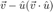
funcB = @(u,v) v - funcA(u,v);
- c)

funcC = @(u,v) sqrt(sum(func(u,v).^2));
- 2.1 2-dimensional test
v = rand(2,1)*2-1 a = rand()*2*pi; u = [cos(a);sin(a)] figure; hold on quiver(0,0,v(1),v(2),1,'b-','DisplayName','$\vec{v}$') quiver(0,0,u(1),u(2),1,'r-','DisplayName','$\hat{u}$') p=funcA(u,v) quiver(0,0,p(1),p(2),1,'b-.','DisplayName','$\hat{u} (\vec{v} \cdot \hat{u})$') q=funcB(u,v) quiver(p(1),p(2),q(1),q(2),1,'b:','DisplayName','$\vec{v} - \hat{u} (\vec{v} \cdot \hat{u})$') leg=legend(); set(leg,'Interpreter','latex') plot([-2,2],[0,0],'k','HandleVisibility','off') plot([0,0],[-2,2],'k','HandleVisibility','off') hold off axis equal xlim([-1.5,1.5]) ylim([-1.5,1.5])
v =
0.8350
0.4271
u =
-0.7361
-0.6769
p =
0.6652
0.6117
q =
0.1698
-0.1846

The codes are working.
- 2.2 4-dimensional test
v = rand(4,1)*2-1 u0 = rand(4,1)*2-1; u = u0/norm(u0)
v =
-0.3134
0.8721
-0.7505
0.4612
u =
0.3234
0.7354
-0.2245
0.5515
the vector in a)
p = funcA(u,v)
p =
0.3113
0.7081
-0.2162
0.5310
is in the same direction as .
p./u
ans =
0.9628
0.9628
0.9628
0.9628
the vector in b)
q = funcB(u,v)
q =
-0.6248
0.1639
-0.5342
-0.0698
is orthogonal to 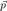.
dot(p,q)
ans = 1.7347e-16
almost zero.
the sum of the two vector
p+q
ans =
-0.3134
0.8721
-0.7505
0.4612
is equal to  .
.
v
v =
-0.3134
0.8721
-0.7505
0.4612
the sum of squared length of the two vectors
sum(p.^2) + sum(q.^2)
ans =
1.6346
is equal to $ {\vec{v}} ^2 $.
sum(v.^2)
ans =
1.6346
3 Geometry of linear transformation
singular value decomposition of a random matrix M
M = rand(2,2) [U,S,V] = svd(M)
M =
0.8352 0.5523
0.3225 0.9791
U =
-0.6939 -0.7201
-0.7201 0.6939
S =
1.3577 0
0 0.4712
V =
-0.5979 -0.8016
-0.8016 0.5979
a unit circle to be operated by the matrix
theta = (0:64)/64*2*pi; P = [cos(theta);sin(theta)]; figure;hold on plot(P(1,1),P(2,1),'r','Marker','*') plot(P(1,:),P(2,:)) hold off;axis equal xlim([-1.5,1.5]) ylim([-1.5,1.5])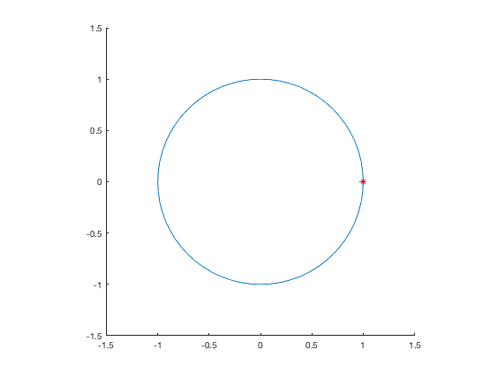
First transformation
R1 = V'*eye(2) [lu,lv,a] = vecLenAngle(R1(:,1),R1(:,2)); disp(['resulting length ',num2str(lu),', ',num2str(lv), '. Angle ',num2str(a*180/pi),' degree'])
R1 = -0.5979 -0.8016 -0.8016 0.5979 resulting length 1, 1. Angle 90 degree
Both angle and lengths are preserved.
plotVec2(R1);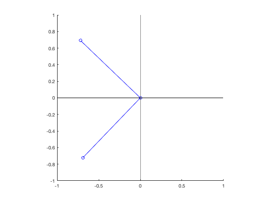
P = V'*P; figure;hold on plot(P(1,1),P(2,1),'r','Marker','*') plot(P(1,:),P(2,:)) hold off;axis equal xlim([-1.5,1.5]) ylim([-1.5,1.5])

the circle rotated (potentially flipped axis addtionally) because V is an orthogonal matrix.
Second transformation
R2 = S*R1 [lu,lv,a] = vecLenAngle(R2(:,1),R2(:,2)); disp(['resulting length ',num2str(lu),', ',num2str(lv), '. Angle ',num2str(a*180/pi),' degree'])
R2 = -0.8117 -1.0883 -0.3777 0.2817 resulting length 0.89531, 1.1241. Angle 39.4651 degree
Both angle and length are changed
plotVec2(R2);

P = S*P; figure;hold on plot(P(1,1),P(2,1),'r','Marker','*') plot(P(1,:),P(2,:)) hold off;axis equal xlim([-1.5,1.5]) ylim([-1.5,1.5])

The circle was stretched into an oval because S is a diagonal matrix.
Third transformation
R3 = U*R2 [lu,lv,a] = vecLenAngle(R3(:,1),R3(:,2)); disp(['resulting length ',num2str(lu),', ',num2str(lv), '. Angle ',num2str(a*180/pi),' degree'])
R3 =
0.8352 0.5523
0.3225 0.9791
resulting length 0.89531, 1.1241. Angle 39.4651 degree
Both angle and lengths are preserved.
plotVec2(R3);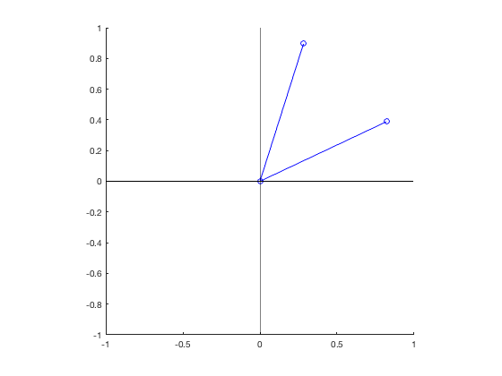
P = U*P; figure;hold on plot(P(1,1),P(2,1),'r','Marker','*') plot(P(1,:),P(2,:)) hold off;axis equal xlim([-1.5,1.5]) ylim([-1.5,1.5])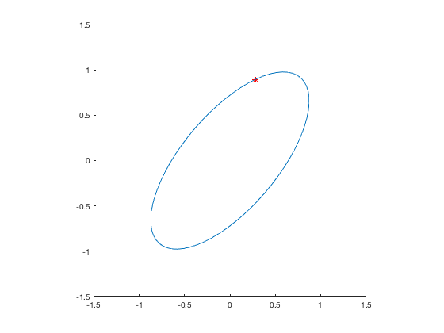
the oval rotated (potentially flipped axis addtionally) because U is an orthogonal matrix.
4 A simple visual neuron
- a) the system is not linear because it only takes positive input, but with positive inputs the response is essentially the dot product a vector of 7 intensities values of each location with the weight vector
w = [1,3,4,5,4,3,1]
w =
1 3 4 5 4 3 1
- b) the unit vector that can generate largest response is parallel with the weight vector
u = w/norm(w)
u =
0.1140 0.3419 0.4558 0.5698 0.4558 0.3419 0.1140
because the response dot(u,w), which is equal to 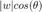, where a is the angle between u and w, takes largest value only when 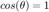, which means u and w are on the same direction.
- c)
Answer: [1,0,0,0,0,0,0] or [0,0,0,0,0,0,1].
Proof:
1. In two dimensional case
Let input vector 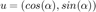 where 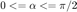 and weight vecor 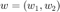.
Then response equals 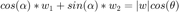, where 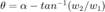.
The response is the least when is most further away from 0, that is w1 if w1<=w2 (take ), or w2 if w2<w1 (take 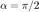). so 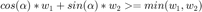 and is the minimum (takes minimum when or 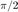).
2. three dimensional case
Let input vector 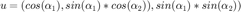 and 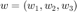. Then the response =
whose miminum (if exists) should be equal to
(when or )
whose miminum exists and is equal to 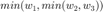 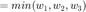
(when or )
so when only one of the input element (corresponding to the minimum in weight vector) is 1 and others equal 0, the response takes minimum, which is .
3.. n dimensional case (n>2) (induction)
Let input vector 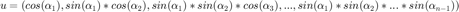 and 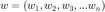.
Then response equals 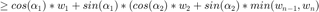 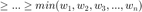
(equal if every 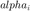 is either 0 or )
The right side is the minimum and exists.
Q.E.D.
5 Gram-Schmidt
function Q=gramSchmidt(N) Q = gramSchmidtRec(N,N); function Q=gramSchmidtRec(n,N) v = rand(N,1)*2-1; if n>1 M = gramSchmidtRec(n-1,N); v = v - M*M'*v; while all(v==0) % rare case if random vector sits on previous plane v = rand(N,1)*2-1; v = v - M*M'*v; end Q = [M,v/norm(v)]; else Q=v/norm(v); end
- 3d plot
Q = gramSchmidt(3) figure; hold on quiver3(0,0,0,Q(1,1),Q(2,1),Q(3,1)) quiver3(0,0,0,Q(1,2),Q(2,2),Q(3,2)) quiver3(0,0,0,Q(1,3),Q(2,3),Q(3,3)) axis equal xlim([-1.1 1.1]);ylim([-1.1 1.1]);zlim([-1.1 1.1]); grid on view(3) % rotate3d on
Q =
-0.0150 -0.4579 -0.8889
0.3809 0.8193 -0.4285
0.9245 -0.3449 0.1621
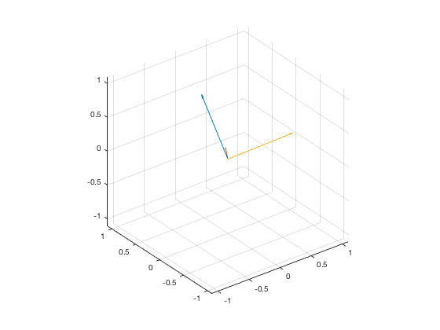 - 7d test
Q = gramSchmidt(7) Q * Q'
Q =
-0.5133 -0.5208 -0.2506 -0.5386 -0.0508 -0.0363 0.3293
-0.4443 0.3594 0.1073 0.3126 -0.6023 0.2061 0.3987
0.5070 0.1047 0.1371 -0.6004 -0.4147 0.4207 0.0607
0.1616 0.3075 -0.0356 -0.0461 0.5640 0.1242 0.7365
-0.2870 -0.2266 0.5026 0.0740 0.3228 0.6876 -0.1766
-0.1031 0.2348 -0.7827 0.0331 0.0890 0.4936 -0.2625
-0.4036 0.6225 0.2010 -0.4929 0.1803 -0.2174 -0.2940
ans =
1.0000 0 -0.0000 -0.0000 -0.0000 -0.0000 0.0000
0 1.0000 -0.0000 0.0000 -0.0000 -0.0000 0.0000
-0.0000 -0.0000 1.0000 0.0000 -0.0000 0.0000 -0.0000
-0.0000 0.0000 0.0000 1.0000 0.0000 -0.0000 0.0000
-0.0000 -0.0000 -0.0000 0.0000 1.0000 0.0000 -0.0000
-0.0000 -0.0000 0.0000 -0.0000 0.0000 1.0000 0.0000
0.0000 0.0000 -0.0000 0.0000 -0.0000 0.0000 1.0000
 is almost idendity matrix, so Q has orthonormal columes.
is almost idendity matrix, so Q has orthonormal columes.
6 Null and Range spaces
function v = mtxNull(M) [~, S, V] = svd(M); [m,n] = size(M); SS = diag(S); VN = V(:,abs(SS)<1e-10); if m<n VN = [VN V(:,(m+1):n)]; end nN = size(VN,2); if nN v = VN*rand(nN,1); else v = false; disp('Null Space is empty') end
function v = mtxRange(M) [U, S, ~] = svd(M); SS = diag(S); UR = U(:,SS>1e-10); n = size(UR,2); if n v = UR*rand(n,1); else v = false; disp('Range Space is empty') end
function invM = mtxInverse(M) [U,S,V] = svd(M); invS = zeros(size(S')); for ii = 1:min(size(S)) s_i = S(ii,ii); if s_i>1e-10 invS(ii,ii) = 1/s_i; end end invM = V*invS*U';
load mtxExamples.mat
- MTX1 Null Space
nullVec = mtxNull(mtx1)
Null Space is empty nullVec = logical 0
if nullVec isZero = mtx1*nullVec end
Range Space
y = mtxRange(mtx1)
y =
0.3587
0.0993
if y x = mtxInverse(mtx1)*y end
x =
0.1027
0.1437
y_hat = mtx1*x
y_hat =
0.3587
0.0993
is equal to y.
- mtx2 Null Space
nullVec = mtxNull(mtx2)
nullVec =
0.1123
-0.1709
0.3023
if nullVec isZero = mtx2*nullVec end
isZero =
1.0e-15 *
0.1110
0
0
Range Space
y = mtxRange(mtx2)
y =
-0.3272
-0.0327
0.1140
if y x = mtxInverse(mtx2)*y end
x =
-0.0106
0.0460
0.0300
y_hat = mtx2*x
y_hat =
-0.3272
-0.0327
0.1140
is equal to y.
- mtx3 Null Space
nullVec = mtxNull(mtx3)
nullVec =
0.0623
0.0772
0.0705
if nullVec isZero = mtx3*nullVec end
isZero =
1.0e-16 *
-0.2776
0.1561
Range Space
y = mtxRange(mtx3)
y =
0.8804
-0.1244
if y x = mtxInverse(mtx3)*y end
x =
-0.1408
-0.0870
0.2197
y_hat = mtx3*x
y_hat =
0.8804
-0.1244
is equal to y.
- mtx4 Null Space
nullVec = mtxNull(mtx4)
nullVec = -0.5221 -0.3907 -0.7739
if nullVec isZero = mtx4*nullVec end
isZero = 1.0e-15 * -0.0069 -0.2220
Range Space
y = mtxRange(mtx4)
y = -0.0018 -0.0474
if y x = mtxInverse(mtx4)*y end
x =
-0.0111
0.0004
0.0073
y_hat = mtx4*x
y_hat = -0.0018 -0.0474
is equal to y.
- mtx5 Null Space
nullVec = mtxNull(mtx5)
Null Space is empty nullVec = logical 0
if nullVec isZero = mtx5*nullVec end
Range Space
y = mtxRange(mtx5)
y =
0.5960
0.3035
-0.4599
if y x = mtxInverse(mtx5)*y end
x =
0.3294
0.0130
y_hat = mtx5*x
y_hat =
0.5960
0.3035
-0.4599
is equal to y.